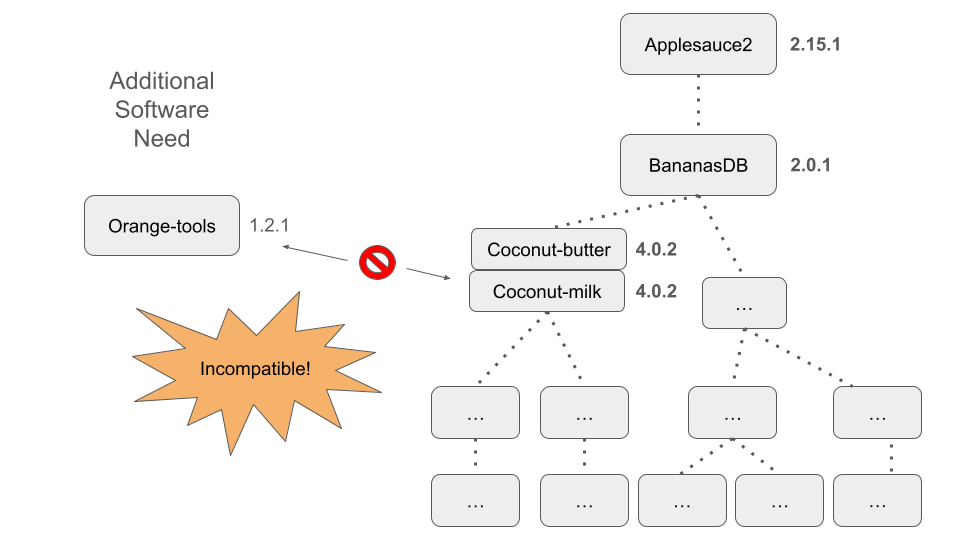

In this module, we will:
- learn about software management
- discuss package managers
- discuss conda as a software management solution
- learn how to set up conda
- learn how to create and use our own conda environments
Software Management
Software management is something that is not typically appreciated
until it is missing. In your typical day-to-day computing tasks,
software management is an automatic background process, and generally
this is how we want things to be.
When performing research computing tasks, however, you may run into
situations when this automatic background handling of software
requirements is not sufficient. You may have very specific version
requirements, or you may have disparate (or incompatible!) software
needs for different tasks.
Package Managers
We likely all have some experience with software management. I’d like
to examine our experience with software management, and promote
appreciation for the work that often happens behind the scenes.
A fictional, simple example of a dependency tree

A tangled mess of a dependency tree, for a real academic software
package

The Need for Modular Solutions

Here we demonstrate another scenario that we might encounter when
trying to manage our software, especially as our list of software
requirements becomes increasingly lengthy or increasingly bespoke.
In the figure above, we show what could happen when we try to use a
cutting-edge version of our fictional software package ‘Applesauce2’
alongside another package ‘Orange-tools’
Conda
- Broad support for many types of software packages
- Across languages and platforms
- Pluggable - Ability to switch between software environments at
will
- Automatically handles software requirements
- A ‘Conda recipe’ is used to list specifications
- Used during environment creation
- Can communicate requirements to others when shared
Allows Us to Manage Our Own Software
For us as users of research software, we’re primarily interested in
conda because it grants us the ability to manage our own software. In
addition, it provides the immense benefit of providing pluggability to
our software management capabilities.
Simplifies Distribution of New Software
When we’re dealing with academic software, a lot of times we’re
dealing with software is ‘cutting-edge’ - the developers may be pushing
the limits of existing software solutions and run into problems. Often,
the develompent of cutting-edge software will find these problems in
established libraries, and they will be addressed in tandem with the
development of the new cutting-edge software that has flushed out these
new edge-cases. This means that we’re often relying on very recent
versions, or as we alluded to above, very specific versions of various
software dependencies.
The platform allows developers to record a project’s environment in a
shareable ‘recipe,’ simplifying the replication of software setups. This
streamlines collaboration and ensures that software runs consistently
across different machines.
For developers, Conda breaks down software distribution into a few
straightforward steps. By defining and packaging an application’s
environment, they make it effortlessly accessible, thereby encouraging
broader use and facilitating user adoption.
Environments
The environment is what is created by Conda, it is the culmination of
the dependency solving and installation completion that conda takes care
of during the creation stage. After it is created, it will remain
available and can be enabled/disabled at will.
To enable and disable an existing conda environment, we will use the
command terms conda activate <environment name> and
conda deactivate.
With the environment activated, software is made available, relevant
commands become callable, etc., and when it’s deactivated, the software
becomes unavailable again.
Quick aside about $PATH - it is one of the tricks that
conda uses in order to achieve this pluggable capability that we’ve been
talking about. the $PATH environment variable is used to
specify and prioritize software locations. We’ll see this in action
during our exercises below.
A Couple of Quick Notes
- Conda provides pluggable capability, but it does not offer a high
degree of isolation from other software on your system.
- We use ‘Conda’ as a generalized term. There are several variations
including ‘Anaconda’ and ‘Miniconda’.
- Anaconda comes pre-bundled with a plethora of common python and data
science packages.
- Miniconda starts out as more of a blank slate.
- We will be installing Miniconda and using it in our exercises.
Packages and Channels
We want to get started using Conda fairly quickly and give practical
tips for using it in our HPC ecosystem, so we’re not going to cover some
of the finer details about how conda creates environments.
We really start to care about these details when we are creating our
own conda environments.
There is an excellent online resource here,
covering the detailed structure of conda packages and how it works under
the hood
Basically, conda packages are bundled up software, system-level
libraries, dependency libraries, metadata, etc. into a particular
structure. This organized structure allows conda to achieve its package
management duties while retaining the beneficial characteristics and
capabilities that we enjoy.
Miniconda Installation and Configuration Details
So far we’ve described many of the details of how conda works and how
we can use it, both to create new environments and to
activate/deactivate them at will. Since we’ll be installing and
configuring it during this workshop, we have some notes here that we’ll
quickly cover before jumping in.
Miniconda Installation Overview
- We will use the Miniconda installer and each of us will install
miniconda to our home directory on Great Lakes.
- Link
to Miniconda installation instructions
- Together, we’ll verify the file integrity of the installer and then
use it to guide us through the installation process.
Conda Configuration with .condarc Overview
- Condarc file contains configuration details for your conda
installation.
- Link
to documentation on using condarc
- In our configuration exercise we will set
envs_dirs
within our condarc file to a location within our turbo storage.
Exercise - Conda Activate, Make BigWig Files
Following along with instructor, learners will activate an existing
environment. We’ll demonstrate addition to the $PATH (and using
which). Then, we’ll create a visualization file for
sample_A - A BigWig File.
Demonstration - Conda Create
Instructor will demonstrate creating a simple conda environment on
the command line.
We’ll then ask about how to create a slightly more complicated conda
environment. We’ll start a thread and learners will respond and/or vote
on the command that they would use.
Exercise - srun and Conda Create
Following along with instructor, we’ll launch an srun job and then
create a conda environment in it. After it’s created, we’ll test it by
activating and deactivating it. While active, we’ll check things like
$PATH and use which to confirm that it’s
working as intended.
Exercise - Conda Export
Following along with the instructor, we’ll use Conda’s export
functionality to create an export - a more complete recipe with all
dependencies and their versions fully listed.
Exercise - srun, Conda, Filtering our BAMs
Following along with the instructor, we’ll launch an interactive job
with srun. Once we’ve entered the running job, we’ll
activate our conda environment and use samtools to filter our BAM file
just as we did in the lmod exercises.
Exercise - srun, Conda, Sanity Check and Index
BAMs
Following along with the instructor, we’ll launch an interactive job
with srun. Once we’ve entered the running job, we’ll
activate our conda environment and use samtools to perform a sanity
check on our filtered BAM files. We’ll also index one of our BAM files -
sample_A. This will set us up for the next step.
Exercise - srun, Conda, Creating Bigwigs
Now we’ll create files for visualization of our filtered BAMs, as
another way to check our results.
Following along with the instructor, we’ll launch an interactive job
with srun. Once we’ve entered the running job, we’ll
activate our conda environment and use bamCoverage to
create a bigwig file for sample_A.
Review
Conda allows us to install and manage our own software. On a
multi-user system like Great Lakes, this is very powerful.
Conda is basically a package manager - it is software that manages
bundles of other software - but it has additional capabilities that make
it great for reproducibility.
It provides pluggability to our software needs. When we need a wide
variety of tools at different times, with some being incompatible with
one another, this becomes critical.
When given a set of software requirement specifications, Conda
handles all of the dependencies and creates a somewhat contained
environment that we can activate and
deactivate as needed.
LS0tCnRpdGxlOiAiU29mdHdhcmUgTWFuYWdlbWVudCBhbmQgQ29uZGEiCmF1dGhvcjogIlVNIEJpb2luZm9ybWF0aWNzIENvcmUiCm91dHB1dDoKICAgICAgICBodG1sX2RvY3VtZW50OgogICAgICAgICAgICBpbmNsdWRlczoKICAgICAgICAgICAgICAgIGluX2hlYWRlcjogaGVhZGVyLmh0bWwKICAgICAgICAgICAgdGhlbWU6IHBhcGVyCiAgICAgICAgICAgIG51bWJlcl9zZWN0aW9uczogZmFsc2UKICAgICAgICAgICAgZmlnX2NhcHRpb246IHRydWUKICAgICAgICAgICAgbWFya2Rvd246IEdGTQogICAgICAgICAgICBjb2RlX2Rvd25sb2FkOiB0cnVlCi0tLQo8c3R5bGUgdHlwZT0idGV4dC9jc3MiPgpib2R5eyAvKiBOb3JtYWwgICovCiAgICAgIGZvbnQtc2l6ZTogMTRwdDsKICB9CnByZSB7CiAgZm9udC1zaXplOiAxMnB0Cn0KPC9zdHlsZT4KCkluIHRoaXMgbW9kdWxlLCB3ZSB3aWxsOgoKKiBsZWFybiBhYm91dCBzb2Z0d2FyZSBtYW5hZ2VtZW50CiogZGlzY3VzcyBwYWNrYWdlIG1hbmFnZXJzCiogZGlzY3VzcyBjb25kYSBhcyBhIHNvZnR3YXJlIG1hbmFnZW1lbnQgc29sdXRpb24KKiBsZWFybiBob3cgdG8gc2V0IHVwIGNvbmRhCiogbGVhcm4gaG93IHRvIGNyZWF0ZSBhbmQgdXNlIG91ciBvd24gY29uZGEgZW52aXJvbm1lbnRzCgojIyBTb2Z0d2FyZSBNYW5hZ2VtZW50CgpTb2Z0d2FyZSBtYW5hZ2VtZW50IGlzIHNvbWV0aGluZyB0aGF0IGlzIG5vdCB0eXBpY2FsbHkgYXBwcmVjaWF0ZWQgdW50aWwgaXQgaXMgbWlzc2luZy4gSW4geW91ciB0eXBpY2FsIGRheS10by1kYXkgY29tcHV0aW5nIHRhc2tzLCBzb2Z0d2FyZSBtYW5hZ2VtZW50IGlzIGFuIGF1dG9tYXRpYyBiYWNrZ3JvdW5kIHByb2Nlc3MsIGFuZCBnZW5lcmFsbHkgdGhpcyBpcyBob3cgd2Ugd2FudCB0aGluZ3MgdG8gYmUuCgpXaGVuIHBlcmZvcm1pbmcgcmVzZWFyY2ggY29tcHV0aW5nIHRhc2tzLCBob3dldmVyLCB5b3UgbWF5IHJ1biBpbnRvIHNpdHVhdGlvbnMgd2hlbiB0aGlzIGF1dG9tYXRpYyBiYWNrZ3JvdW5kIGhhbmRsaW5nIG9mIHNvZnR3YXJlIHJlcXVpcmVtZW50cyBpcyBub3Qgc3VmZmljaWVudC4gWW91IG1heSBoYXZlIHZlcnkgc3BlY2lmaWMgdmVyc2lvbiByZXF1aXJlbWVudHMsIG9yIHlvdSBtYXkgaGF2ZSBkaXNwYXJhdGUgKG9yIGluY29tcGF0aWJsZSEpIHNvZnR3YXJlIG5lZWRzIGZvciBkaWZmZXJlbnQgdGFza3MuCgojIyMgUGFja2FnZSBNYW5hZ2VycwoKV2UgbGlrZWx5IGFsbCBoYXZlIHNvbWUgZXhwZXJpZW5jZSB3aXRoIHNvZnR3YXJlIG1hbmFnZW1lbnQuIEknZCBsaWtlIHRvIGV4YW1pbmUgb3VyIGV4cGVyaWVuY2Ugd2l0aCBzb2Z0d2FyZSBtYW5hZ2VtZW50LCBhbmQgcHJvbW90ZSBhcHByZWNpYXRpb24gZm9yIHRoZSB3b3JrIHRoYXQgb2Z0ZW4gaGFwcGVucyBiZWhpbmQgdGhlIHNjZW5lcy4KCjwhLS0gTElWRV9OT1RFOiBTbGFjayBwb2xsaW5nIGZvciB3aG8gdXNlcyBXaW5kb3dzLCB3aG8gdXNlcyBNYWNPUywgTGludXggLS0+CjwhLS0gTElWRV9OT1RFOiBBZnRlciBwb2xsaW5nLCByZWxhdGUgdG8gYXV0b21hdGljIHVwZGF0ZXMsIEFwcCBTdG9yZSwgV2luZG93cyBVcGRhdGVzLCBldGMuIC0tPgoKPGJyPgo8YnI+Cjxicj4KCkEgZmljdGlvbmFsLCBzaW1wbGUgZXhhbXBsZSBvZiBhIGRlcGVuZGVuY3kgdHJlZQoKIVtdKGltYWdlcy9Nb2R1bGUwNF9kZXBlbmRlbmNpZXNfbG9uZ19saXN0LnBuZykKCjxicj4KCjxkZXRhaWxzPgo8c3VtbWFyeT5BIHRhbmdsZWQgbWVzcyBvZiBhIGRlcGVuZGVuY3kgdHJlZSwgZm9yIGEgcmVhbCBhY2FkZW1pYyBzb2Z0d2FyZSBwYWNrYWdlPC9zdW1tYXJ5PgoKIVtdKGltYWdlcy9Nb2R1bGUwNF9kZXBlbmRlbmNpZXNfeHNka190YW5nbGVkX21lc3MucG5nKQoKPC9kZXRhaWxzPgoKPGJyPgoKIyMjIFRoZSBOZWVkIGZvciBNb2R1bGFyIFNvbHV0aW9ucwoKIVtdKGltYWdlcy9Nb2R1bGUwNF9kZXBlbmRlbmNpZXNfaW5jb21wYXRpYmlsaXR5LnBuZykKCkhlcmUgd2UgZGVtb25zdHJhdGUgYW5vdGhlciBzY2VuYXJpbyB0aGF0IHdlIG1pZ2h0IGVuY291bnRlciB3aGVuIHRyeWluZyB0byBtYW5hZ2Ugb3VyIHNvZnR3YXJlLCBlc3BlY2lhbGx5IGFzIG91ciBsaXN0IG9mIHNvZnR3YXJlIHJlcXVpcmVtZW50cyBiZWNvbWVzIGluY3JlYXNpbmdseSBsZW5ndGh5IG9yIGluY3JlYXNpbmdseSBiZXNwb2tlLgoKSW4gdGhlIGZpZ3VyZSBhYm92ZSwgd2Ugc2hvdyB3aGF0IGNvdWxkIGhhcHBlbiB3aGVuIHdlIHRyeSB0byB1c2UgYSBjdXR0aW5nLWVkZ2UgdmVyc2lvbiBvZiBvdXIgZmljdGlvbmFsIHNvZnR3YXJlIHBhY2thZ2UgJ0FwcGxlc2F1Y2UyJyBhbG9uZ3NpZGUgYW5vdGhlciBwYWNrYWdlICdPcmFuZ2UtdG9vbHMnCgo8IS0tIExJVkVfTk9URTogQXNrIGFib3V0IHNvZnR3YXJlIGluY29tcGF0aWJpbGl0eSBleHBlcmllbmNlcyB3aGVuIHVzaW5nIHJlc2VhcmNoIHNvZnR3YXJlIC0tPgoKPCEtLSBMSVZFX05PVEU6IFJlbGF0ZSBvdXIgdHlwaWNhbCBleHBlcmllbmNlIG9mIG9ubHkgaGF2aW5nIGEgc2luZ2xlIGNvbXB1dGUgZW52aXJvbm1lbnQgdG8gd29yayB3aXRoLiBPbmNlIHdlIGluc3RhbGwgc29tZXRoaW5nLCBnZW5lcmFsbHkgaXQgc3RheXMgdGhlcmUgZm9yZXZlciB1bmxlc3Mgd2UgdW5pbnN0YWxsIGl0IG1hbnVhbGx5LiBFdmVuIGFmdGVyIHVuaW5zdGFsbGluZyBpdCwgc29tZSBhcnRpZmFjdHMgbWF5IHJlbWFpbiBhbmQgY2F1c2UgaW50ZXJmZXJlbmNlIC0tPgoKPGJyPgoKIyMgQ29uZGEKCjwhLS0gRklYTUU6IENvbmRhIGljb24gb3Igd2Vic2l0ZSBiYW5uZXIgaGVyZSAtLT4KCi0gQnJvYWQgc3VwcG9ydCBmb3IgbWFueSB0eXBlcyBvZiBzb2Z0d2FyZSBwYWNrYWdlcwogIC0gQWNyb3NzIGxhbmd1YWdlcyBhbmQgcGxhdGZvcm1zCi0gUGx1Z2dhYmxlIC0gQWJpbGl0eSB0byBzd2l0Y2ggYmV0d2VlbiBzb2Z0d2FyZSBlbnZpcm9ubWVudHMgYXQgd2lsbAotIEF1dG9tYXRpY2FsbHkgaGFuZGxlcyBzb2Z0d2FyZSByZXF1aXJlbWVudHMKLSBBICdDb25kYSByZWNpcGUnIGlzIHVzZWQgdG8gbGlzdCBzcGVjaWZpY2F0aW9ucwogIC0gVXNlZCBkdXJpbmcgZW52aXJvbm1lbnQgY3JlYXRpb24KICAtIENhbiBjb21tdW5pY2F0ZSByZXF1aXJlbWVudHMgdG8gb3RoZXJzIHdoZW4gc2hhcmVkCgojIyMgQWxsb3dzIFVzIHRvIE1hbmFnZSBPdXIgT3duIFNvZnR3YXJlCgpGb3IgdXMgYXMgdXNlcnMgb2YgcmVzZWFyY2ggc29mdHdhcmUsIHdlJ3JlIHByaW1hcmlseSBpbnRlcmVzdGVkIGluIGNvbmRhIGJlY2F1c2UgaXQgZ3JhbnRzIHVzIHRoZSBhYmlsaXR5IHRvIG1hbmFnZSBvdXIgb3duIHNvZnR3YXJlLiBJbiBhZGRpdGlvbiwgaXQgcHJvdmlkZXMgdGhlIGltbWVuc2UgYmVuZWZpdCBvZiBwcm92aWRpbmcgcGx1Z2dhYmlsaXR5IHRvIG91ciBzb2Z0d2FyZSBtYW5hZ2VtZW50IGNhcGFiaWxpdGllcy4KCjwhLS0gTElWRV9OT1RFOiBSZWxhdGUgdG8gbm90IGJlaW5nIGFibGUgdG8gdXNlIGRlZXB0b29scywgbm8gbW9kdWxlIGF2YWlsYWJsZSBpbiBwcmV2IG1vZHVsZSAtLT4KCiMjIyBTaW1wbGlmaWVzIERpc3RyaWJ1dGlvbiBvZiBOZXcgU29mdHdhcmUKCldoZW4gd2UncmUgZGVhbGluZyB3aXRoIGFjYWRlbWljIHNvZnR3YXJlLCBhIGxvdCBvZiB0aW1lcyB3ZSdyZSBkZWFsaW5nIHdpdGggc29mdHdhcmUgaXMgJ2N1dHRpbmctZWRnZScgLSB0aGUgZGV2ZWxvcGVycyBtYXkgYmUgcHVzaGluZyB0aGUgbGltaXRzIG9mIGV4aXN0aW5nIHNvZnR3YXJlIHNvbHV0aW9ucyBhbmQgcnVuIGludG8gcHJvYmxlbXMuIE9mdGVuLCB0aGUgZGV2ZWxvbXBlbnQgb2YgY3V0dGluZy1lZGdlIHNvZnR3YXJlIHdpbGwgZmluZCB0aGVzZSBwcm9ibGVtcyBpbiBlc3RhYmxpc2hlZCBsaWJyYXJpZXMsIGFuZCB0aGV5IHdpbGwgYmUgYWRkcmVzc2VkIGluIHRhbmRlbSB3aXRoIHRoZSBkZXZlbG9wbWVudCBvZiB0aGUgbmV3IGN1dHRpbmctZWRnZSBzb2Z0d2FyZSB0aGF0IGhhcyBmbHVzaGVkIG91dCB0aGVzZSBuZXcgZWRnZS1jYXNlcy4gVGhpcyBtZWFucyB0aGF0IHdlJ3JlIG9mdGVuIHJlbHlpbmcgb24gdmVyeSByZWNlbnQgdmVyc2lvbnMsIG9yIGFzIHdlIGFsbHVkZWQgdG8gYWJvdmUsIHZlcnkgc3BlY2lmaWMgdmVyc2lvbnMgb2YgdmFyaW91cyBzb2Z0d2FyZSBkZXBlbmRlbmNpZXMuIAoKVGhlIHBsYXRmb3JtIGFsbG93cyBkZXZlbG9wZXJzIHRvIHJlY29yZCBhIHByb2plY3QncyBlbnZpcm9ubWVudCBpbiBhIHNoYXJlYWJsZSAncmVjaXBlLCcgc2ltcGxpZnlpbmcgdGhlIHJlcGxpY2F0aW9uIG9mIHNvZnR3YXJlIHNldHVwcy4gVGhpcyBzdHJlYW1saW5lcyBjb2xsYWJvcmF0aW9uIGFuZCBlbnN1cmVzIHRoYXQgc29mdHdhcmUgcnVucyBjb25zaXN0ZW50bHkgYWNyb3NzIGRpZmZlcmVudCBtYWNoaW5lcy4KCkZvciBkZXZlbG9wZXJzLCBDb25kYSBicmVha3MgZG93biBzb2Z0d2FyZSBkaXN0cmlidXRpb24gaW50byBhIGZldyBzdHJhaWdodGZvcndhcmQgc3RlcHMuIEJ5IGRlZmluaW5nIGFuZCBwYWNrYWdpbmcgYW4gYXBwbGljYXRpb24ncyBlbnZpcm9ubWVudCwgdGhleSBtYWtlIGl0IGVmZm9ydGxlc3NseSBhY2Nlc3NpYmxlLCB0aGVyZWJ5IGVuY291cmFnaW5nIGJyb2FkZXIgdXNlIGFuZCBmYWNpbGl0YXRpbmcgdXNlciBhZG9wdGlvbi4KCgojIyMgRW52aXJvbm1lbnRzCgpUaGUgZW52aXJvbm1lbnQgaXMgd2hhdCBpcyBjcmVhdGVkIGJ5IENvbmRhLCBpdCBpcyB0aGUgY3VsbWluYXRpb24gb2YgdGhlIGRlcGVuZGVuY3kgc29sdmluZyBhbmQgaW5zdGFsbGF0aW9uIGNvbXBsZXRpb24gdGhhdCBjb25kYSB0YWtlcyBjYXJlIG9mIGR1cmluZyB0aGUgY3JlYXRpb24gc3RhZ2UuIEFmdGVyIGl0IGlzIGNyZWF0ZWQsIGl0IHdpbGwgcmVtYWluIGF2YWlsYWJsZSBhbmQgY2FuIGJlIGVuYWJsZWQvZGlzYWJsZWQgYXQgd2lsbC4KClRvIGVuYWJsZSBhbmQgZGlzYWJsZSBhbiBleGlzdGluZyBjb25kYSBlbnZpcm9ubWVudCwgd2Ugd2lsbCB1c2UgdGhlIGNvbW1hbmQgdGVybXMgYGNvbmRhIGFjdGl2YXRlIDxlbnZpcm9ubWVudCBuYW1lPmAgYW5kIGBjb25kYSBkZWFjdGl2YXRlYC4KCldpdGggdGhlIGVudmlyb25tZW50IGFjdGl2YXRlZCwgc29mdHdhcmUgaXMgbWFkZSBhdmFpbGFibGUsIHJlbGV2YW50IGNvbW1hbmRzIGJlY29tZSBjYWxsYWJsZSwgZXRjLiwgYW5kIHdoZW4gaXQncyBkZWFjdGl2YXRlZCwgdGhlIHNvZnR3YXJlIGJlY29tZXMgdW5hdmFpbGFibGUgYWdhaW4uCgpRdWljayBhc2lkZSBhYm91dCBgJFBBVEhgIC0gaXQgaXMgb25lIG9mIHRoZSB0cmlja3MgdGhhdCBjb25kYSB1c2VzIGluIG9yZGVyIHRvIGFjaGlldmUgdGhpcyBwbHVnZ2FibGUgY2FwYWJpbGl0eSB0aGF0IHdlJ3ZlIGJlZW4gdGFsa2luZyBhYm91dC4gdGhlIGAkUEFUSGAgZW52aXJvbm1lbnQgdmFyaWFibGUgaXMgdXNlZCB0byBzcGVjaWZ5IGFuZCBwcmlvcml0aXplIHNvZnR3YXJlIGxvY2F0aW9ucy4gV2UnbGwgc2VlIHRoaXMgaW4gYWN0aW9uIGR1cmluZyBvdXIgZXhlcmNpc2VzIGJlbG93LgoKCiMjIyBBIENvdXBsZSBvZiBRdWljayBOb3RlcwoKLSBDb25kYSBwcm92aWRlcyBwbHVnZ2FibGUgY2FwYWJpbGl0eSwgYnV0IGl0IGRvZXMgbm90IG9mZmVyIGEgaGlnaCBkZWdyZWUgb2YgaXNvbGF0aW9uIGZyb20gb3RoZXIgc29mdHdhcmUgb24geW91ciBzeXN0ZW0uCi0gV2UgdXNlICdDb25kYScgYXMgYSBnZW5lcmFsaXplZCB0ZXJtLiBUaGVyZSBhcmUgc2V2ZXJhbCB2YXJpYXRpb25zIGluY2x1ZGluZyAnQW5hY29uZGEnIGFuZCAnTWluaWNvbmRhJy4KICAtIEFuYWNvbmRhIGNvbWVzIHByZS1idW5kbGVkIHdpdGggYSBwbGV0aG9yYSBvZiBjb21tb24gcHl0aG9uIGFuZCBkYXRhIHNjaWVuY2UgcGFja2FnZXMuCiAgLSBNaW5pY29uZGEgc3RhcnRzIG91dCBhcyBtb3JlIG9mIGEgYmxhbmsgc2xhdGUuCiAgLSBXZSB3aWxsIGJlIGluc3RhbGxpbmcgTWluaWNvbmRhIGFuZCB1c2luZyBpdCBpbiBvdXIgZXhlcmNpc2VzLgoKPGJyPgoKPGRldGFpbHM+CjxzdW1tYXJ5PlBhY2thZ2VzIGFuZCBDaGFubmVsczwvc3VtbWFyeT4KCldlIHdhbnQgdG8gZ2V0IHN0YXJ0ZWQgdXNpbmcgQ29uZGEgZmFpcmx5IHF1aWNrbHkgYW5kIGdpdmUgcHJhY3RpY2FsIHRpcHMgZm9yIHVzaW5nIGl0IGluIG91ciBIUEMgZWNvc3lzdGVtLCBzbyB3ZSdyZSBub3QgZ29pbmcgdG8gY292ZXIgc29tZSBvZiB0aGUgZmluZXIgZGV0YWlscyBhYm91dCBob3cgY29uZGEgY3JlYXRlcyBlbnZpcm9ubWVudHMuCgpXZSByZWFsbHkgc3RhcnQgdG8gY2FyZSBhYm91dCB0aGVzZSBkZXRhaWxzIHdoZW4gd2UgYXJlIGNyZWF0aW5nIG91ciBvd24gY29uZGEgZW52aXJvbm1lbnRzLiAKClRoZXJlIGlzIGFuIGV4Y2VsbGVudCBvbmxpbmUgcmVzb3VyY2UgW2hlcmUsIGNvdmVyaW5nIHRoZSBkZXRhaWxlZCBzdHJ1Y3R1cmUgb2YgY29uZGEgcGFja2FnZXMgYW5kIGhvdyBpdCB3b3JrcyB1bmRlciB0aGUgaG9vZF0oaHR0cHM6Ly9lZGNhcnAuZ2l0aHViLmlvL2ludHJvZHVjdGlvbi10by1jb25kYS1mb3ItZGF0YS1zY2llbnRpc3RzLzAzLXVzaW5nLXBhY2thZ2VzLWFuZC1jaGFubmVscy9pbmRleC5odG1sKQoKQmFzaWNhbGx5LCBjb25kYSBwYWNrYWdlcyBhcmUgYnVuZGxlZCB1cCBzb2Z0d2FyZSwgc3lzdGVtLWxldmVsIGxpYnJhcmllcywgZGVwZW5kZW5jeSBsaWJyYXJpZXMsIG1ldGFkYXRhLCBldGMuIGludG8gYSBwYXJ0aWN1bGFyIHN0cnVjdHVyZS4gVGhpcyBvcmdhbml6ZWQgc3RydWN0dXJlIGFsbG93cyBjb25kYSB0byBhY2hpZXZlIGl0cyBwYWNrYWdlIG1hbmFnZW1lbnQgZHV0aWVzIHdoaWxlIHJldGFpbmluZyB0aGUgYmVuZWZpY2lhbCBjaGFyYWN0ZXJpc3RpY3MgYW5kIGNhcGFiaWxpdGllcyB0aGF0IHdlIGVuam95LgoKPC9kZXRhaWxzPgoKPGJyPgoKIyMgTWluaWNvbmRhIEluc3RhbGxhdGlvbiBhbmQgQ29uZmlndXJhdGlvbiBEZXRhaWxzCgpTbyBmYXIgd2UndmUgZGVzY3JpYmVkIG1hbnkgb2YgdGhlIGRldGFpbHMgb2YgaG93IGNvbmRhIHdvcmtzIGFuZCBob3cgd2UgY2FuIHVzZSBpdCwgYm90aCB0byBjcmVhdGUgbmV3IGVudmlyb25tZW50cyBhbmQgdG8gYWN0aXZhdGUvZGVhY3RpdmF0ZSB0aGVtIGF0IHdpbGwuIFNpbmNlIHdlJ2xsIGJlIGluc3RhbGxpbmcgYW5kIGNvbmZpZ3VyaW5nIGl0IGR1cmluZyB0aGlzIHdvcmtzaG9wLCB3ZSBoYXZlIHNvbWUgbm90ZXMgaGVyZSB0aGF0IHdlJ2xsIHF1aWNrbHkgY292ZXIgYmVmb3JlIGp1bXBpbmcgaW4uCgojIyMgTWluaWNvbmRhIEluc3RhbGxhdGlvbiBPdmVydmlldwoKLSBXZSB3aWxsIHVzZSB0aGUgTWluaWNvbmRhIGluc3RhbGxlciBhbmQgZWFjaCBvZiB1cyB3aWxsIGluc3RhbGwgbWluaWNvbmRhIHRvIG91ciBob21lIGRpcmVjdG9yeSBvbiBHcmVhdCBMYWtlcy4KLSBbTGluayB0byBNaW5pY29uZGEgaW5zdGFsbGF0aW9uIGluc3RydWN0aW9uc10oaHR0cHM6Ly9kb2NzLmFuYWNvbmRhLmNvbS9mcmVlL21pbmljb25kYS9taW5pY29uZGEtaW5zdGFsbC8pCi0gVG9nZXRoZXIsIHdlJ2xsIHZlcmlmeSB0aGUgZmlsZSBpbnRlZ3JpdHkgb2YgdGhlIGluc3RhbGxlciBhbmQgdGhlbiB1c2UgaXQgdG8gZ3VpZGUgdXMgdGhyb3VnaCB0aGUgaW5zdGFsbGF0aW9uIHByb2Nlc3MuCgojIyMgQ29uZGEgQ29uZmlndXJhdGlvbiB3aXRoIC5jb25kYXJjIE92ZXJ2aWV3CgotIENvbmRhcmMgZmlsZSBjb250YWlucyBjb25maWd1cmF0aW9uIGRldGFpbHMgZm9yIHlvdXIgY29uZGEgaW5zdGFsbGF0aW9uLgotIFtMaW5rIHRvIGRvY3VtZW50YXRpb24gb24gdXNpbmcgY29uZGFyY10oaHR0cHM6Ly9jb25kYS5pby9wcm9qZWN0cy9jb25kYS9lbi9sYXRlc3QvdXNlci1ndWlkZS9jb25maWd1cmF0aW9uL3VzZS1jb25kYXJjLmh0bWwpCi0gSW4gb3VyIGNvbmZpZ3VyYXRpb24gZXhlcmNpc2Ugd2Ugd2lsbCBzZXQgYGVudnNfZGlyc2Agd2l0aGluIG91ciBjb25kYXJjIGZpbGUgdG8gYSBsb2NhdGlvbiB3aXRoaW4gb3VyIHR1cmJvIHN0b3JhZ2UuCgo8YnI+CgojIyBFeGVyY2lzZSAtIENvbmRhIEluc3RhbGwgYW5kIENvbmZpZ3VyZQoKRm9sbG93aW5nIGFsb25nIHdpdGggaW5zdHJ1Y3RvciwgbGVhcm5lcnMgd2lsbCBpbnN0YWxsIG1pbmljb25kYSBhbmQgY3JlYXRlIGEgYC5jb25kYXJjYCBmaWxlLgoKPCEtLSBMSVZFX05PVEU6IFpvb20gcG9sbCB0byB2ZXJpZnkgbWluaWNvbmRhIGluc3RhbGxhdGlvbiBsb2NhdGlvbiB3aXRoIGBsc2AgYW5kIHZlcmlmeSBjb25kYXJjIGZpbGUgd2l0aCBgY2F0YCAtLT4gCgo8YnI+CgojIyBFeGVyY2lzZSAtIENvbmRhIEFjdGl2YXRlLCBNYWtlIEJpZ1dpZyBGaWxlcwoKRm9sbG93aW5nIGFsb25nIHdpdGggaW5zdHJ1Y3RvciwgbGVhcm5lcnMgd2lsbCBhY3RpdmF0ZSBhbiBleGlzdGluZyBlbnZpcm9ubWVudC4gV2UnbGwgZGVtb25zdHJhdGUgYWRkaXRpb24gdG8gdGhlICRQQVRIIChhbmQgdXNpbmcgYHdoaWNoYCkuIFRoZW4sIHdlJ2xsIGNyZWF0ZSBhIHZpc3VhbGl6YXRpb24gZmlsZSBmb3Igc2FtcGxlX0EgLSBBIEJpZ1dpZyBGaWxlLgoKPCEtLSBMSVZFX05PVEU6IE5vdyB3ZSdsbCBnbyB0byBodHRwczovL2lndi5vcmcvYXBwLyBhbmQgdmlzdWFsaXplIHdoYXQgdGhpcyBsb29rcyBsaWtlLiAtLT4KCjxicj4KCiMjIERlbW9uc3RyYXRpb24gLSBDb25kYSBDcmVhdGUKCkluc3RydWN0b3Igd2lsbCBkZW1vbnN0cmF0ZSBjcmVhdGluZyBhIHNpbXBsZSBjb25kYSBlbnZpcm9ubWVudCBvbiB0aGUgY29tbWFuZCBsaW5lLiAKCldlJ2xsIHRoZW4gYXNrIGFib3V0IGhvdyB0byBjcmVhdGUgYSBzbGlnaHRseSBtb3JlIGNvbXBsaWNhdGVkIGNvbmRhIGVudmlyb25tZW50LiBXZSdsbCBzdGFydCBhIHRocmVhZCBhbmQgbGVhcm5lcnMgd2lsbCByZXNwb25kIGFuZC9vciB2b3RlIG9uIHRoZSBjb21tYW5kIHRoYXQgdGhleSB3b3VsZCB1c2UuCgo8YnI+CgojIyBFeGVyY2lzZSAtIGBzcnVuYCBhbmQgQ29uZGEgQ3JlYXRlCgpGb2xsb3dpbmcgYWxvbmcgd2l0aCBpbnN0cnVjdG9yLCB3ZSdsbCBsYXVuY2ggYW4gc3J1biBqb2IgYW5kIHRoZW4gY3JlYXRlIGEgY29uZGEgZW52aXJvbm1lbnQgaW4gaXQuIEFmdGVyIGl0J3MgY3JlYXRlZCwgd2UnbGwgdGVzdCBpdCBieSBhY3RpdmF0aW5nIGFuZCBkZWFjdGl2YXRpbmcgaXQuIFdoaWxlIGFjdGl2ZSwgd2UnbGwgY2hlY2sgdGhpbmdzIGxpa2UgYCRQQVRIYCBhbmQgdXNlIGB3aGljaGAgdG8gY29uZmlybSB0aGF0IGl0J3Mgd29ya2luZyBhcyBpbnRlbmRlZC4KCjxicj4KCiMjIEV4ZXJjaXNlIC0gQ29uZGEgRXhwb3J0CgpGb2xsb3dpbmcgYWxvbmcgd2l0aCB0aGUgaW5zdHJ1Y3Rvciwgd2UnbGwgdXNlIENvbmRhJ3MgZXhwb3J0IGZ1bmN0aW9uYWxpdHkgdG8gY3JlYXRlIGFuIGV4cG9ydCAtIGEgbW9yZSBjb21wbGV0ZSByZWNpcGUgd2l0aCBhbGwgZGVwZW5kZW5jaWVzIGFuZCB0aGVpciB2ZXJzaW9ucyBmdWxseSBsaXN0ZWQuCgo8IS0tIExJVkVfTk9URTogQWxsdWRlIHRvIHRoZSBpZGVhIG9mIHRpbWUtYmFzZWQgZHVyYWJpbGl0eSAtLT4KCjxicj4KCiMjIEV4ZXJjaXNlIC0gYHNydW5gLCBDb25kYSwgRmlsdGVyaW5nIG91ciBCQU1zCgpGb2xsb3dpbmcgYWxvbmcgd2l0aCB0aGUgaW5zdHJ1Y3Rvciwgd2UnbGwgbGF1bmNoIGFuIGludGVyYWN0aXZlIGpvYiB3aXRoIGBzcnVuYC4gT25jZSB3ZSd2ZSBlbnRlcmVkIHRoZSBydW5uaW5nIGpvYiwgd2UnbGwgYWN0aXZhdGUgb3VyIGNvbmRhIGVudmlyb25tZW50IGFuZCB1c2Ugc2FtdG9vbHMgdG8gZmlsdGVyIG91ciBCQU0gZmlsZSBqdXN0IGFzIHdlIGRpZCBpbiB0aGUgYGxtb2RgIGV4ZXJjaXNlcy4KCiMjIEluZGVwZW5kZW50IEV4ZXJjaXNlIC0gU0JBVENILCBDb25kYSwgRmlsdGVyaW5nIG91dCBCQU1zCgpbTGluayB0byBJbmRlcGVuZGVudCBFeGVyY2lzZV0oZXhlcmNpc2UtMi5odG1sKQoKPGJyPgoKIyMgRXhlcmNpc2UgLSBgc3J1bmAsIENvbmRhLCBTYW5pdHkgQ2hlY2sgYW5kIEluZGV4IEJBTXMKCkZvbGxvd2luZyBhbG9uZyB3aXRoIHRoZSBpbnN0cnVjdG9yLCB3ZSdsbCBsYXVuY2ggYW4gaW50ZXJhY3RpdmUgam9iIHdpdGggYHNydW5gLiBPbmNlIHdlJ3ZlIGVudGVyZWQgdGhlIHJ1bm5pbmcgam9iLCB3ZSdsbCBhY3RpdmF0ZSBvdXIgY29uZGEgZW52aXJvbm1lbnQgYW5kIHVzZSBzYW10b29scyB0byBwZXJmb3JtIGEgc2FuaXR5IGNoZWNrIG9uIG91ciBmaWx0ZXJlZCBCQU0gZmlsZXMuIFdlJ2xsIGFsc28gaW5kZXggb25lIG9mIG91ciBCQU0gZmlsZXMgLSBzYW1wbGVfQS4gVGhpcyB3aWxsIHNldCB1cyB1cCBmb3IgdGhlIG5leHQgc3RlcC4KCgojIyBFeGVyY2lzZSAtIGBzcnVuYCwgQ29uZGEsIENyZWF0aW5nIEJpZ3dpZ3MKCk5vdyB3ZSdsbCBjcmVhdGUgZmlsZXMgZm9yIHZpc3VhbGl6YXRpb24gb2Ygb3VyIGZpbHRlcmVkIEJBTXMsIGFzIGFub3RoZXIgd2F5IHRvIGNoZWNrIG91ciByZXN1bHRzLgoKRm9sbG93aW5nIGFsb25nIHdpdGggdGhlIGluc3RydWN0b3IsIHdlJ2xsIGxhdW5jaCBhbiBpbnRlcmFjdGl2ZSBqb2Igd2l0aCBgc3J1bmAuIE9uY2Ugd2UndmUgZW50ZXJlZCB0aGUgcnVubmluZyBqb2IsIHdlJ2xsIGFjdGl2YXRlIG91ciBjb25kYSBlbnZpcm9ubWVudCBhbmQgdXNlIGBiYW1Db3ZlcmFnZWAgdG8gY3JlYXRlIGEgYmlnd2lnIGZpbGUgZm9yIHNhbXBsZV9BLgoKPCEtLSBMSVZFX05PVEU6IE5vdyB3ZSdsbCBnbyB0byBodHRwczovL2lndi5vcmcvYXBwLyBhbmQgdmlzdWFsaXplIHdoYXQgdGhpcyBsb29rcyBsaWtlLiAtLT4KCiMjIFJldmlldwoKQ29uZGEgYWxsb3dzIHVzIHRvIGluc3RhbGwgYW5kIG1hbmFnZSBvdXIgb3duIHNvZnR3YXJlLiBPbiBhIG11bHRpLXVzZXIgc3lzdGVtIGxpa2UgR3JlYXQgTGFrZXMsIHRoaXMgaXMgdmVyeSBwb3dlcmZ1bC4KCkNvbmRhIGlzIGJhc2ljYWxseSBhIHBhY2thZ2UgbWFuYWdlciAtIGl0IGlzIHNvZnR3YXJlIHRoYXQgbWFuYWdlcyBidW5kbGVzIG9mIG90aGVyIHNvZnR3YXJlIC0gYnV0IGl0IGhhcyBhZGRpdGlvbmFsIGNhcGFiaWxpdGllcyB0aGF0IG1ha2UgaXQgZ3JlYXQgZm9yIHJlcHJvZHVjaWJpbGl0eS4KCjwhLS0gTElWRV9OT1RFOiBSZW1pbmQgYWJvdXQgY29uZGEgcmVjaXBlcyB0aGF0IHdlIGNhbiBzaGFyZSwgYWxsb3dpbmcgdGhlbSB0byBiZSBidWlsdCBvbiBvdGhlciBzeXN0ZW1zIG9yIGJ5IG90aGVyIHBlb3BsZSAtLT4KCkl0IHByb3ZpZGVzIHBsdWdnYWJpbGl0eSB0byBvdXIgc29mdHdhcmUgbmVlZHMuIFdoZW4gd2UgbmVlZCBhIHdpZGUgdmFyaWV0eSBvZiB0b29scyBhdCBkaWZmZXJlbnQgdGltZXMsIHdpdGggc29tZSBiZWluZyBpbmNvbXBhdGlibGUgd2l0aCBvbmUgYW5vdGhlciwgdGhpcyBiZWNvbWVzIGNyaXRpY2FsLgoKV2hlbiBnaXZlbiBhIHNldCBvZiBzb2Z0d2FyZSByZXF1aXJlbWVudCBzcGVjaWZpY2F0aW9ucywgQ29uZGEgaGFuZGxlcyBhbGwgb2YgdGhlIGRlcGVuZGVuY2llcyBhbmQgY3JlYXRlcyBhIHNvbWV3aGF0IGNvbnRhaW5lZCBlbnZpcm9ubWVudCB0aGF0IHdlIGNhbiBgYWN0aXZhdGVgIGFuZCBgZGVhY3RpdmF0ZWAgYXMgbmVlZGVkLgoKPGJyPgoKIyMjIEhhbmR5IExpbmtzCgotIFtNaW5pY29uZGEgaW5zdGFsbGF0aW9uIGluc3RydWN0aW9uc10oaHR0cHM6Ly9kb2NzLmFuYWNvbmRhLmNvbS9mcmVlL21pbmljb25kYS9taW5pY29uZGEtaW5zdGFsbC8pCi0gW01pbmljb25kYSBkb3dubG9hZHMgcGFnZV0oaHR0cHM6Ly9yZXBvLmFuYWNvbmRhLmNvbS9taW5pY29uZGEvTWluaWNvbmRhMy1sYXRlc3QtTGludXgteDg2XzY0LnNoKQotIFtDb25maWd1cmF0aW9uIHdpdGggY29uZGFyY10oaHR0cHM6Ly9jb25kYS5pby9wcm9qZWN0cy9jb25kYS9lbi9sYXRlc3QvdXNlci1ndWlkZS9jb25maWd1cmF0aW9uL3VzZS1jb25kYXJjLmh0bWwpCgo8YnI+CgotLS0KCgp8IFtQcmV2aW91cyBsZXNzb25dKE1vZHVsZTAzYl9ncmVhdF9sYWtlc19jbHVzdGVyLmh0bWwpIHwgW1RvcCBvZiB0aGlzIGxlc3Nvbl0oI3RvcCkgfCBbTmV4dCBsZXNzb25dKE1vZHVsZTA1X2NvbnRhaW5lcnNfZG9ja2VyX3Npbmd1bGFyaXR5Lmh0bWwpIHwKfCA6LS0tIHwgOi0tLS06IHwgLS0tOiB8Cgo=